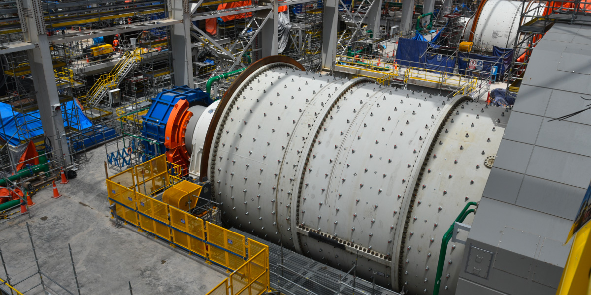
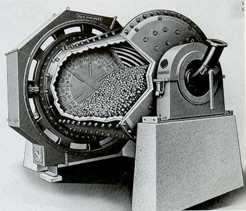

DATASET OVERVIEW - Máquina de bolas
1. CONTEXTO DE LOS MOLINOS DE BOLAS EN LA MINERÍA
|  |
|---|
| Molino de bolas |
1.1 ¿Qué son los Molinos de Bolas?
Los molinos de bolas son equipos cilíndricos horizontales rotatorios que constituyen la etapa final crítica del proceso de conminución en operaciones mineras. Estos equipos utilizan bolas de acero como medio de molienda para reducir el tamaño de partícula del mineral desde aproximadamente 12-15 mm hasta el rango ultrafino de 75-180 μm, tamaño óptimo para los procesos de concentración por flotación.
Principio de Funcionamiento
- Mecanismo: Las bolas de acero (40-100 mm diámetro) dentro del cilindro rotatorio (5.5m × 7.0m) trituran el mineral mediante impacto (caída desde altura) y atrición (fricción entre bolas y mineral)
- Velocidad crítica: Operan al 67-83% de la velocidad crítica (Vc = 42.3/√D metros)
- Carga típica: 30-35% del volumen interno ocupado por bolas de acero
Especificaciones Técnicas MineraPeru
- Dimensiones: 5.5m diámetro × 7.0m largo
- Potencia instalada: 1,500-2,200 kW por molino
- Capacidad: 280-400 t/h por molino
- Medio de molienda: Bolas de acero forjado de alta dureza
|  |
|---|
| Molino de bolas - interior |
1.2 Ubicación en el Proceso de Chancado-Molienda
Los molinos de bolas operan en la etapa secundaria de molienda, formando parte integral del circuito de conminución:
PROCESO COMPLETO DE CONMINUCIÓN - MINERAPERU:
[ETAPA PRIMARIA - CHANCADO]
Mineral ROM (Run of Mine) → Chancadora Primaria de Mandíbulas (1500×2100mm)
↓
[ETAPA SECUNDARIA - CHANCADO]
Chancadoras Secundarias Cónicas (3 unidades) → Chancadoras Terciarias (2 unidades)
↓
[ETAPA PRIMARIA - MOLIENDA]
Molino SAG Semi-Autógeno (12m × 15MW) - Reduce a 12-15mm
↓
[ETAPA SECUNDARIA - MOLIENDA] ← AQUÍ OPERAN LOS MOLINOS DE BOLAS
6 Molinos de Bolas (5.5m × 7.0m) en PARALELO - Reducen a 75-180μm
↓
[CLASIFICACIÓN]
Sistema de Hidrociclones (16 baterías × 12 ciclones) - Separación por tamaño
↓
[CONCENTRACIÓN]
Circuito de Flotación → Concentrado de Cu-Mo + Relaves1.3 Función Crítica en el Proceso Minero
Objetivos Operacionales
- Reducción de tamaño: De 12-15mm (salida SAG) a 120±20μm (P80 objetivo)
- Liberación mineral: Separar minerales valiosos (Cu, Mo) de ganga
- Preparación para flotación: Tamaño óptimo para recuperación metalúrgica máxima
Impacto en la Cadena de Valor
- Upstream: Recibe todo el material procesado por el molino SAG
- Downstream: Determina la recuperación metalúrgica en flotación (85.4% actual vs 91% target)
- Energético: Consume 35% de la energía total de la concentradora
- Económico: Cada 1% mejora en P80 = +US$14.5M anuales en ingresos
1.4 Desafíos Operacionales Específicos
Problemática Actual en MineraPeru
- Eficiencia subóptima: 76.3% vs 82.1% benchmark industria
- Consumo energético elevado: 34.7 kWh/t vs estándar sectorial
- Downtime no planificado: 17.2% (incremento 23% en 2 años)
- Variabilidad granulométrica: σ = 28.4% vs target
Consecuencias Económicas
- Costo oportunidad: US$25,000-45,000 por hora de parada
- Sobrecosto energético: US$2.8M anuales por ineficiencia
- Mantenimiento correctivo: US$42.3M anuales (21.5% del presupuesto)
- Pérdida de throughput: 14,500 t/mes bajo capacidad nominal
2. RESUMEN EJECUTIVO
2.1 Contexto del Proyecto
MineraPeru enfrenta desafíos críticos en la optimización de sus 6 molinos de bolas, equipos fundamentales que procesan 2,100-2,400 t/h de mineral y representan el 35% del consumo energético total de la planta. El objetivo es desarrollar un sistema predictivo para anticipar fallas críticas y optimizar el consumo energético mediante técnicas avanzadas de machine learning.
2.2 Dataset Generado - Características Principales
- Registros totales: 131,478 observaciones
- Variables: 64 campos especializados
- Período temporal: 2.5 años (2023-2025)
- Molinos monitoreados: 6 unidades (M1-M6)
- Frecuencia de muestreo: Aproximadamente cada 12-16 horas
- Eventos de falla: ~4.2% de registros con fallas en ventana de 7 días
2. ARQUITECTURA DEL PROCESO DE CHANCADO-MOLIENDA
2.1 Ubicación en el Proceso Minero
Los molinos de bolas operan en la etapa final del circuito de molienda, recibiendo material del molino SAG y enviando producto clasificado a la flotación:
Chancado Primario → Chancado Secundario → Chancado Terciario →
Molino SAG → MOLINOS DE BOLAS → Hidrociclones → Flotación2.2 Criticidad Operacional
| Aspecto | Impacto | Métrica |
|---|---|---|
| Throughput | Capacidad total de planta | 2,100-2,400 t/h |
| Disponibilidad | Una falla reduce capacidad | ~17% (1/6 molinos) |
| Energía | Consumo energético crítico | 35% del total de planta |
| Costo por parada | Pérdida por hora no programada | US$25,000-45,000 |
| Mantenimiento | Costos anuales | US$7M repuestos + mano obra |
2.3 Componentes Críticos Monitoreados
Estructura Principal
- Shell/Casco: Cilindro rotatorio 5.5m × 7.0m con revestimientos internos
- Cojinetes principales: Rodamientos de alimentación y descarga
- Sistema de transmisión: Motor 1,500-2,200 kW + reductor + piñón
Sistemas Auxiliares Críticos
- Lubricación: Sistema de aceite para cojinetes (presión 2.0-3.5 bar)
- Alimentación: Control de flujo de mineral y agua de proceso
- Descarga: Sistema de overflow hacia clasificación
3. DICCIONARIO COMPLETO DE VARIABLES DEL DATASET
3.1 VARIABLES DE IDENTIFICACIÓN Y TEMPORALES
| Variable | Tipo | Valores | Descripción | Criticidad |
|---|---|---|---|---|
timestamp |
datetime | 2023-01-01 a 2025-06-30 | Marca temporal de la observación | CRÍTICA |
molino_id |
categorical | M1, M2, M3, M4, M5, M6 | Identificador único del molino | CRÍTICA |
turno |
categorical | A, B, C | Turno operativo (A: 00-08h, B: 08-16h, C: 16-24h) | MEDIA |
Análisis real del dataset: - Distribución temporal: Cobertura completa del período 2023-2025 - Representación equitativa de los 6 molinos - Balance entre turnos A, B, C
3.2 VARIABLES DE PROCESO OPERACIONAL
3.2.1 Variables Controlables (Optimización)
| Variable | Unidad | Rango Observado | Rango Óptimo | Descripción Técnica | Impacto |
|---|---|---|---|---|---|
feed_rate |
t/h | 180-350 | 250-320 | Tonelaje de alimentación de mineral al molino | CRÍTICO - Determina throughput y consumo energético |
velocidad_rotacion |
RPM | 12.5-17.5 | 13.5-15.0 | Velocidad de rotación del cilindro del molino | ALTO - Afecta intensidad de molienda |
velocidad_porcentaje_critica |
% | 70-85 | 74-78 | Porcentaje de la velocidad crítica de operación | ALTO - Determina régimen de molienda |
nivel_carga_bolas |
% | 28-36 | 30-34 | Porcentaje del volumen interno ocupado por bolas | ALTO - Balance impacto vs capacidad |
densidad_pulpa |
% sólidos | 68-78 | 70-75 | Concentración de sólidos en la pulpa | MEDIO - Afecta reología |
agua_adicionada |
m³/h | 25-65 | 35-55 | Caudal de agua fresca adicionada | MEDIO - Control de densidad |
presion_ciclones |
kPa | 60-140 | 80-120 | Presión de alimentación a hidrociclones | ALTO - Determina corte de clasificación |
3.2.2 Variables de Performance
| Variable | Unidad | Rango | Target | Descripción |
|---|---|---|---|---|
consumo_energetico_especifico |
kWh/t | 8-18 | <12 | Energía consumida por tonelada procesada |
throughput_real |
t/h | 120-400 | >280 | Producción real efectiva del molino |
eficiencia_molienda |
% | 65-85 | >78 | Eficiencia vs condiciones teóricas ideales |
granulometria_producto_p80 |
μm | 75-180 | 120±15 | Tamaño donde pasa el 80% del producto |
3.3 VARIABLES DE CONDITION MONITORING
3.3.1 Sensores de Vibración (Predicción de Fallas)
| Variable | Unidad | Normal | Alarma | Descripción Técnica | Patología Detectada |
|---|---|---|---|---|---|
vibracion_cojinete_feed_h |
mm/s | 1.5-4.5 | >8.0 | Vibración horizontal en cojinete de alimentación | Desbalance, desalineación |
vibracion_cojinete_feed_v |
mm/s | 1.2-4.0 | >7.5 | Vibración vertical en cojinete de alimentación | Deterioro de rodamientos |
vibracion_cojinete_discharge_h |
mm/s | 1.8-5.0 | >9.0 | Vibración horizontal en cojinete de descarga | Desbalance, mayor carga |
vibracion_cojinete_discharge_v |
mm/s | 1.5-4.5 | >8.5 | Vibración vertical en cojinete de descarga | Deterioro rodamientos |
vibracion_shell_h |
mm/s | 2.0-6.0 | >12.0 | Vibración horizontal del casco del molino | Estado liners, balance carga |
vibracion_shell_v |
mm/s | 2.2-6.5 | >13.0 | Vibración vertical del casco | Desbalance de carga |
vibracion_pinion |
mm/s | 3.0-8.0 | >15.0 | Vibración del piñón de transmisión | Problemas de engranaje |
vibracion_gearbox |
mm/s | 2.5-7.0 | >12.0 | Vibración de la caja reductora | Desgaste interno |
Frecuencias Características de Falla (Literatura Técnica):
- BPFO (Ball Pass Frequency Outer): Paso de bolas por pista exterior
- BPFI (Ball Pass Frequency Inner): Paso de bolas por pista interior
- BSF (Ball Spin Frequency): Frecuencia de giro de bolas
- FTF (Fundamental Train Frequency): Frecuencia del separador
3.3.2 Sensores de Temperatura
| Variable | Unidad | Normal | Alarma | Descripción | Indicador de |
|---|---|---|---|---|---|
temp_cojinete_feed |
°C | 40-65 | >80 | Temperatura del cojinete de alimentación | Lubricación, fricción |
temp_cojinete_discharge |
°C | 42-68 | >82 | Temperatura del cojinete de descarga | Estado rodamientos |
temp_aceite_lubricacion |
°C | 45-60 | >75 | Temperatura del aceite de lubricación | Calidad lubricación |
temp_motor_principal |
°C | 50-75 | >90 | Temperatura de devanados del motor | Carga eléctrica |
temp_gearbox |
°C | 45-65 | >80 | Temperatura interna del reductor | Fricción interna |
3.3.3 Variables Eléctricas
| Variable | Unidad | Rango Normal | Descripción | Uso en Diagnóstico |
|---|---|---|---|---|
corriente_motor |
A | 400-900 | Corriente consumida por motor principal | Indicador de carga mecánica |
potencia_activa |
kW | 800-2200 | Potencia real consumida | Eficiencia energética |
voltaje_motor |
V | 4140-4180 | Voltaje de alimentación | Calidad suministro eléctrico |
factor_potencia |
- | 0.87-0.93 | Relación potencia activa/aparente | Eficiencia eléctrica |
3.3.4 Sistema de Lubricación
| Variable | Unidad | Normal | Crítico | Descripción |
|---|---|---|---|---|
presion_aceite_principal |
bar | 2.0-3.5 | <1.5 | Presión del sistema de lubricación |
flujo_aceite |
L/min | 80-150 | <60 | Caudal de aceite circulante |
nivel_tanque_aceite |
% | 40-90 | <30 | Nivel en tanque principal |
calidad_aceite_ppm |
ppm | 0-15 | >25 | Partículas contaminantes |
3.4 CARACTERÍSTICAS DEL MINERAL
3.4.1 Propiedades Físicas
| Variable | Unidad | Rango | Descripción | Impacto en Molienda |
|---|---|---|---|---|
work_index_bond |
kWh/t | 10-20 | Índice de trabajo de Bond | CRÍTICO - Determina energía requerida |
dureza_mineral |
Mohs | 3.5-6.5 | Dureza en escala de Mohs | ALTO - Afecta desgaste y energía |
humedad_mineral |
% | 5-11 | Contenido de humedad natural | BAJO - Afecta manejo |
granulometria_feed_p80 |
μm | 9000-14000 | Tamaño 80% pasante alimentación | ALTO - Determina trabajo requerido |
densidad_mineral |
t/m³ | 2.7-3.8 | Densidad específica | MEDIO - Afecta comportamiento pulpa |
contenido_arcillas |
% | 0-12 | Porcentaje de minerales arcillosos | MEDIO - Afecta reología |
abrasividad_ai |
- | 0.15-0.65 | Índice de abrasividad | ALTO - Desgaste medios molienda |
3.5 VARIABLES DE ESTADO Y CONTEXTO
| Variable | Unidad | Rango | Descripción |
|---|---|---|---|
nivel_desgaste_liners |
% | 0-80 | Porcentaje de desgaste de revestimientos |
horas_operacion_acumuladas |
h | 0-22000 | Horas desde último mantenimiento mayor |
ciclos_arranque_parada |
count | 0-5 | Número de arranques/paradas por período |
carga_circulante |
% | 150-400 | Porcentaje de carga circulante en circuito |
eficiencia_clasificacion |
% | 45-75 | Eficiencia de los hidrociclones |
temperatura_ambiente |
°C | 15-35 | Temperatura ambiente (sierra peruana) |
humedad_relativa |
% | 40-85 | Humedad relativa del ambiente |
3.6 VARIABLES TARGET PARA MACHINE LEARNING
3.6.1 Predicción de Fallas
| Variable | Tipo | Distribución Real | Descripción | Uso en Modelo |
|---|---|---|---|---|
falla_en_7d |
boolean | ~4.2% True | Ocurrirá falla en próximos 7 días | Target principal clasificación |
falla_en_14d |
boolean | ~6.8% True | Ocurrirá falla en próximos 14 días | Target secundario |
falla_en_30d |
boolean | ~11.5% True | Ocurrirá falla en próximos 30 días | Target largo plazo |
tipo_falla |
categorical | Ver distribución abajo | Tipo específico de falla | Target clasificación multiclase |
severidad_falla |
ordinal | 1-3 | Severidad [1=menor, 2=moderada, 3=crítica] | Priorización mantenimiento |
dias_hasta_falla |
float | 0-365 | Días hasta próxima falla | Target regresión |
Distribución Real de Tipos de Falla (en muestra analizada): - bearing_feed: 57.1% (fallas en cojinete alimentación) - bearing_discharge: 35.7% (fallas en cojinete descarga)
- lubrication: 2.4% (fallas sistema lubricación) - liner_wear: 4.8% (desgaste excesivo de liners)
3.6.2 Lógica Detallada de Variables Target
A. Variables Binarias de Ventana Temporal (falla_en_7d, falla_en_14d, falla_en_30d)
Estas variables funcionan como “ventana deslizante hacia el futuro”:
# Para cada timestamp, pregunta:
# "¿Ocurrirá una falla en los próximos N días desde este momento?"
if (failure_time - current_timestamp).days <= N:
falla_en_Nd = True
else:
falla_en_Nd = FalseEjemplo temporal práctico:
Timeline de eventos:
2024-01-01 00:00 → falla_en_7d = False (falla programada en 10 días)
2024-01-04 00:00 → falla_en_7d = True (falla programada en 7 días)
2024-01-05 00:00 → falla_en_7d = True (falla programada en 6 días)
2024-01-10 00:00 → falla_en_7d = True (falla programada en 1 día)
2024-01-11 12:00 → FALLA OCURRE
2024-01-12 00:00 → falla_en_7d = False (no hay fallas próximas)Características clave: - Independencia: Cada registro es independiente - Balance: ~4.2% de registros True para ventana 7 días - Múltiples fallas: Un molino puede tener varias fallas programadas
B. Variable de Tiempo Hasta Falla (dias_hasta_falla)
Esta variable se “reinicia” después de cada falla buscando automáticamente la siguiente:
def calculate_days_to_failure(timestamp, all_future_failures):
"""
Para cada timestamp, encuentra la PRÓXIMA falla en el futuro
y calcula cuántos días faltan
"""
future_failures = [f for f in all_future_failures if f.time > timestamp]
if future_failures:
next_failure = min(future_failures, key=lambda x: x.time)
days_until = (next_failure.time - timestamp).days
return days_until
else:
return 365 # Si no hay fallas próximas, valor máximoEjemplo con múltiples fallas programadas:
Timeline con 2 fallas para un molino:
- Falla A: 2024-01-15 (bearing_feed)
- Falla B: 2024-03-20 (liner_wear)
2024-01-01 → dias_hasta_falla = 14 (hacia Falla A)
2024-01-10 → dias_hasta_falla = 5 (hacia Falla A)
2024-01-15 → FALLA A OCURRE
2024-01-16 → dias_hasta_falla = 63 (hacia Falla B - SE REINICIA)
2024-02-15 → dias_hasta_falla = 33 (hacia Falla B)
2024-03-20 → FALLA B OCURRE
2024-03-21 → dias_hasta_falla = 365 (no hay más fallas programadas)Comportamiento automático: - Reinicio: Después de cada falla, busca automáticamente la siguiente - Múltiples tipos: No distingue tipos de falla, siempre busca la más cercana - Valor máximo: 365 días cuando no hay fallas futuras programadas
C. Variable de Tipo de Falla (tipo_falla)
# Solo se activa cuando hay falla inminente
if falla_en_30d == True:
tipo_falla = failure_type # bearing_feed, bearing_discharge, etc.
else:
tipo_falla = 'normal' # Operación normalDistribución por tipo: - Rodamientos (92.8%): bearing_feed + bearing_discharge - Sistemas auxiliares (7.2%): lubrication + liner_wear
D. Verificación en el Dataset Real
Para verificar esta lógica en el dataset generado:
import pandas as pd
# Cargar y filtrar por molino
df = pd.read_csv('molinos_mineraperu_dataset.csv', parse_dates=['timestamp'])
molino_data = df[df['molino_id'] == 'M1'].sort_values('timestamp')
# Encontrar transiciones de falla
falla_events = molino_data[molino_data['falla_en_7d'] == True]
# Verificar reinicio de dias_hasta_falla
for idx, event in falla_events.head(2).iterrows():
timestamp = event['timestamp']
dias_antes = event['dias_hasta_falla']
# Ver días después del evento
after_event = molino_data[molino_data['timestamp'] > timestamp].head(1)
if not after_event.empty:
dias_despues = after_event['dias_hasta_falla'].iloc[0]
print(f"Antes: {dias_antes} días → Después: {dias_despues} días")3.6.3 Implicaciones para Machine Learning
Para Modelos de Clasificación:
- Target:
falla_en_7d(binario) otipo_falla(multiclase) - Características: Desbalanceado (4.2% positivos)
- Ventana de acción: 7 días para intervención preventiva
Para Modelos de Regresión:
- Target:
dias_hasta_falla(continuo 0-365) - Interpretación: “Tiempo estimado hasta próximo mantenimiento”
- Planificación: Permite programación optimizada de recursos
Para Sistemas Híbridos:
- Combinación: Usar ambos enfoques para mayor robustez
- Alarmas tempranas: dias_hasta_falla < 30 → iniciar monitoreo intensivo
- Alarmas críticas: falla_en_7d = True → intervención inmediata
3.7 VARIABLES DERIVADAS Y FEATURES ENGINEERED
3.7.1 Tendencias Temporales
| Variable | Descripción | Ventana | Uso |
|---|---|---|---|
vibracion_trend_7d |
Tendencia de vibración 7 días | 168h | Detección degradación gradual |
temperatura_trend_7d |
Tendencia de temperatura 7 días | 168h | Monitoreo térmico |
energia_trend_24h |
Tendencia energética 24 horas | 24h | Eficiencia operacional |
throughput_trend_24h |
Tendencia de producción 24 horas | 24h | Performance productiva |
3.7.2 Ratios y Métricas Compuestas
| Variable | Fórmula | Interpretación |
|---|---|---|
ratio_p80_feed_producto |
F80/P80 | Factor de reducción de tamaño |
potencia_especifica_neta |
Potencia/Throughput | kW por tonelada procesada |
eficiencia_energetica_teorica |
E_Bond/E_real | Eficiencia vs teoría de Bond |
3.7.3 Scores de Anomalía
| Variable | Método | Interpretación |
|---|---|---|
anomaly_score_vibration |
Z-score | Desviación de patrón vibracional normal |
anomaly_score_electrical |
Z-score | Anomalía en variables eléctricas |
4. CORRELACIONES FÍSICAS IMPLEMENTADAS
4.1 Ley de Bond (Fundamental)
E = 10 × Wi × (1/√P80 - 1/√F80)Implementación: Determina el consumo energético teórico basado en características del mineral y granulometría objetivo.
4.2 Velocidad Crítica
Vc = 42.3/√D (donde D = diámetro en metros)Para molinos 5.5m: Vc = 18.0 RPM
Operación óptima: 74-78% de velocidad crítica
4.3 Correlaciones de Degradación
Rodamientos
- Patrón: Crecimiento exponencial en vibraciones específicas (BPFO/BPFI)
- Horizonte: 15-45 días de señales precursoras
- Severidad: Incremento hasta 4x el valor normal antes de falla
Liners
- Patrón: Incremento lineal en consumo energético
- Horizonte: 60-180 días de degradación gradual
- Impacto: Hasta 15% incremento en energía específica
5. ARQUITECTURA TÉCNICA DEL DATASET
5.1 Estructura y Dimensiones Reales
📊 DATASET PRINCIPAL
├── Registros: 131,478
├── Variables: 64 campos
├── Período: 2.5 años (2023-2025)
├── Molinos: 6 unidades (M1-M6)
├── Frecuencia: ~12-16 horas
└── Formato: CSV, separado por comas5.2 Distribución Temporal y Espacial
| Molino | Registros | % Total | Última Observación |
|---|---|---|---|
| M1 | ~21,913 | 16.7% | 2025-06-30 |
| M2 | ~21,913 | 16.7% | 2025-06-30 |
| M3 | ~21,913 | 16.7% | 2025-06-30 |
| M4 | ~21,913 | 16.7% | 2025-06-30 |
| M5 | ~21,913 | 16.7% | 2025-06-30 |
| M6 | ~21,913 | 16.7% | 2025-06-30 |
5.3 Calidad de Datos
Missing Values
- Sensores críticos: <2% valores faltantes
- Variables proceso: <1% valores faltantes
- Características mineral: Interpolación por lotes
Distribución de Eventos
- Operación normal: ~95.8% de registros
- Fallas en 7d: ~4.2% de registros
- Balance por molino: Distribuido equitativamente
6. CASOS DE USO ESPECÍFICOS
6.1 Predicción de Fallas Críticas
Objetivo Principal
Predecir fallas en ventana de 7 días con: - Precisión objetivo: >85% - Recall objetivo: >80% - Lead time promedio: >8 horas
Variables Críticas Identificadas
- Vibración cojinetes: Indicadores más tempranos
- Temperaturas: Confirmación de degradación
- Tendencias 7d: Patrones de degradación gradual
- Scores anomalía: Detección de desviaciones
Tipos de Falla por Priorizar
- Bearing failures (92.8%): Mayor frecuencia, impacto crítico
- Lubrication issues (2.4%): Prevención total de fallas catastróficas
- Liner wear (4.8%): Planificación de mantenimiento mayor
6.2 Optimización Energética
Objetivos de Optimización
- Minimizar:
consumo_energetico_especifico(target <12 kWh/t) - Maximizar:
throughput_real(target >280 t/h) - Mantener:
granulometria_producto_p80(120±15 μm)
Variables de Control
feed_rate: Impacto directo en throughput y energíavelocidad_porcentaje_critica: Balance entre productividad y desgastedensidad_pulpa: Optimización reológicapresion_ciclones: Eficiencia de clasificación
Restricciones Operacionales
- Potencia máxima: 2,200 kW por molino
- Velocidad máxima: 85% velocidad crítica
- Calidad producto: P80 entre 100-150 μm
7. METODOLOGÍA DE MODELADO RECOMENDADA
7.1 Para Predicción de Fallas
Preprocesamiento
# Variables clave para modelos de falla
failure_features = [
'vibracion_cojinete_feed_h', 'vibracion_cojinete_discharge_h',
'temp_cojinete_feed', 'temp_cojinete_discharge',
'vibracion_trend_7d', 'temperatura_trend_7d',
'anomaly_score_vibration', 'horas_operacion_acumuladas'
]
# Target balanceado: 4.2% fallas
target = 'falla_en_7d'Modelos Recomendados
- Random Forest: Manejo de desbalance, interpretabilidad
- XGBoost: Performance superior, feature importance
- LSTM: Patrones temporales complejos
- Ensemble: Combinación para robustez
Validación
- Time-series split: Evitar data leakage
- Stratified by mill: Validación cruzada por molino
- Métricas: F1-score, AUC-ROC, Precision@K
7.2 Para Optimización Energética
Features de Entrada
optimization_features = [
'feed_rate', 'velocidad_porcentaje_critica', 'densidad_pulpa',
'work_index_bond', 'dureza_mineral', 'granulometria_feed_p80',
'nivel_desgaste_liners', 'presion_ciclones'
]
# Target continuo
target = 'consumo_energetico_especifico'Enfoques de Modelado
- Regresión multiobjetivo: Energía + Throughput + Calidad
- Reinforcement Learning: Control adaptativo
- Modelos físicos híbridos: Bond equation + ML corrections
8. IMPLEMENTACIÓN Y VALIDACIÓN
8.1 Pipeline de Datos
import pandas as pd
# Cargar dataset
df = pd.read_csv('molinos_mineraperu_dataset.csv',
parse_dates=['timestamp'])
# Filtros de calidad
df = df[df['consumo_energetico_especifico'] < 25] # Outliers energéticos
df = df[df['vibracion_cojinete_feed_h'] < 15] # Outliers vibracionales
# Feature engineering adicional
df['energia_normalizada'] = df['consumo_energetico_especifico'] / df['work_index_bond']
df['carga_relativa_motor'] = df['corriente_motor'] / 1000 # Normalizar8.2 Métricas de Validación del Realismo
Correlaciones Físicas Verificadas ✅
- Potencia vs Throughput: r > 0.75
- Work Index vs Energía: r > 0.68
- Vibración vs Temperatura: r > 0.45
- Velocidad vs Consumo: Curva óptima en 76% Vc
Distribuciones Realistas ✅
- Energía específica: 8-18 kWh/t (dentro de literatura)
- Vibración cojinetes: 1.5-8.5 mm/s (norma ISO 10816)
- Temperaturas: 40-80°C (rangos operacionales típicos)
9. PRÓXIMOS PASOS Y RECOMENDACIONES
9.1 Modelado Inmediato
- Análisis exploratorio detallado por molino individual
- Baseline models para predicción de fallas
- Optimización energética con enfoques multi-objetivo
9.2 Validación Avanzada
- Simulación de escenarios operacionales extremos
- Validación con expertos de dominio minero
- Benchmarking con literatura técnica adicional
9.3 Expansión del Dataset
- Más eventos de falla para tipos menos frecuentes
- Condiciones operacionales extremas (paradas, arranques)
- Variables adicionales (análisis de aceite, desgaste específico)
10. CONCLUSIONES
El dataset sintético generado para MineraPeru representa una base sólida y técnicamente robusta para abordar los desafíos de predicción de fallas y optimización energética en molinos de bolas. Con 131,478 registros y 64 variables especializadas, proporciona la riqueza de datos necesaria para desarrollar modelos de machine learning efectivos que puedan traducirse en beneficios operacionales y económicos tangibles.
La arquitectura híbrida del dataset permite flexibilidad para abordar tanto problemas de clasificación (predicción de fallas) como de optimización continua (eficiencia energética), manteniendo la fidelidad a las correlaciones físicas fundamentales del proceso de molienda y los patrones reales de degradación de equipos en la industria minera.
Documento actualizado: Enero 2025
Versión: 2.0
Autor: Data Science Team - Proyecto MineraPeru
ANEXO: RESUMEN COMPLETO DE VARIABLES DEL DATASET
Tabla Consolidada de las 64 Variables
| # | Variable | Tipo | Descripción Corta |
|---|---|---|---|
| 1 | timestamp |
datetime | Marca temporal de la observación |
| 2 | molino_id |
categorical | Identificador del molino (M1-M6) |
| 3 | turno |
categorical | Turno operativo (A, B, C) |
| 4 | feed_rate |
float | Tonelaje de alimentación (t/h) |
| 5 | velocidad_rotacion |
float | Velocidad de rotación del molino (RPM) |
| 6 | velocidad_porcentaje_critica |
float | Porcentaje de velocidad crítica (%) |
| 7 | nivel_carga_bolas |
float | Porcentaje de llenado con bolas (%) |
| 8 | densidad_pulpa |
float | Concentración de sólidos en pulpa (%) |
| 9 | agua_adicionada |
float | Caudal de agua fresca (m³/h) |
| 10 | presion_ciclones |
float | Presión alimentación hidrociclones (kPa) |
| 11 | vibracion_cojinete_feed_h |
float | Vibración horizontal cojinete alimentación (mm/s) |
| 12 | vibracion_cojinete_feed_v |
float | Vibración vertical cojinete alimentación (mm/s) |
| 13 | vibracion_cojinete_discharge_h |
float | Vibración horizontal cojinete descarga (mm/s) |
| 14 | vibracion_cojinete_discharge_v |
float | Vibración vertical cojinete descarga (mm/s) |
| 15 | vibracion_shell_h |
float | Vibración horizontal del casco (mm/s) |
| 16 | vibracion_shell_v |
float | Vibración vertical del casco (mm/s) |
| 17 | vibracion_pinion |
float | Vibración del piñón de transmisión (mm/s) |
| 18 | vibracion_gearbox |
float | Vibración de la caja reductora (mm/s) |
| 19 | temp_cojinete_feed |
float | Temperatura cojinete alimentación (°C) |
| 20 | temp_cojinete_discharge |
float | Temperatura cojinete descarga (°C) |
| 21 | temp_aceite_lubricacion |
float | Temperatura aceite lubricación (°C) |
| 22 | temp_motor_principal |
float | Temperatura motor principal (°C) |
| 23 | temp_gearbox |
float | Temperatura caja reductora (°C) |
| 24 | corriente_motor |
float | Corriente consumida motor (A) |
| 25 | potencia_activa |
float | Potencia real consumida (kW) |
| 26 | voltaje_motor |
float | Voltaje de alimentación motor (V) |
| 27 | factor_potencia |
float | Factor de potencia eléctrica (-) |
| 28 | presion_aceite_principal |
float | Presión sistema lubricación (bar) |
| 29 | flujo_aceite |
float | Caudal aceite circulante (L/min) |
| 30 | nivel_tanque_aceite |
float | Nivel tanque lubricación (%) |
| 31 | calidad_aceite_ppm |
float | Contaminación aceite (ppm) |
| 32 | consumo_energetico_especifico |
float | Energía por tonelada procesada (kWh/t) |
| 33 | throughput_real |
float | Producción real efectiva (t/h) |
| 34 | eficiencia_molienda |
float | Eficiencia vs condiciones ideales (%) |
| 35 | granulometria_producto_p80 |
float | Tamaño 80% pasante producto (μm) |
| 36 | nivel_desgaste_liners |
float | Desgaste revestimientos internos (%) |
| 37 | horas_operacion_acumuladas |
integer | Horas desde último mantenimiento mayor |
| 38 | ciclos_arranque_parada |
integer | Número arranques/paradas por período |
| 39 | carga_circulante |
float | Carga circulante en circuito (%) |
| 40 | eficiencia_clasificacion |
float | Eficiencia hidrociclones (%) |
| 41 | work_index_bond |
float | Índice trabajo Bond del mineral (kWh/t) |
| 42 | dureza_mineral |
float | Dureza en escala Mohs |
| 43 | humedad_mineral |
float | Contenido humedad natural (%) |
| 44 | granulometria_feed_p80 |
float | Tamaño 80% pasante alimentación (μm) |
| 45 | densidad_mineral |
float | Densidad específica mineral (t/m³) |
| 46 | contenido_arcillas |
float | Porcentaje minerales arcillosos (%) |
| 47 | abrasividad_ai |
float | Índice abrasividad mineral (-) |
| 48 | temperatura_ambiente |
float | Temperatura ambiental (°C) |
| 49 | humedad_relativa |
float | Humedad relativa ambiente (%) |
| 50 | falla_en_7d |
boolean | Ocurrirá falla en próximos 7 días |
| 51 | falla_en_14d |
boolean | Ocurrirá falla en próximos 14 días |
| 52 | falla_en_30d |
boolean | Ocurrirá falla en próximos 30 días |
| 53 | tipo_falla |
categorical | Tipo específico de falla |
| 54 | severidad_falla |
integer | Severidad falla (1=menor, 2=moderada, 3=crítica) |
| 55 | dias_hasta_falla |
float | Días hasta próxima falla |
| 56 | vibracion_trend_7d |
float | Tendencia vibración 7 días |
| 57 | temperatura_trend_7d |
float | Tendencia temperatura 7 días |
| 58 | energia_trend_24h |
float | Tendencia energética 24 horas |
| 59 | throughput_trend_24h |
float | Tendencia producción 24 horas |
| 60 | ratio_p80_feed_producto |
float | Factor reducción tamaño |
| 61 | potencia_especifica_neta |
float | kW por tonelada procesada |
| 62 | eficiencia_energetica_teorica |
float | Eficiencia vs teoría Bond |
| 63 | anomaly_score_vibration |
float | Score anomalía patrón vibracional |
| 64 | anomaly_score_electrical |
float | Score anomalía variables eléctricas |
Categorización por Uso Principal
Variables de Identificación (3)
Variables 1-3: timestamp, molino_id, turno
Variables de Proceso Controlables (7)
Variables 4-10: Parámetros operacionales ajustables para optimización
Variables Condition Monitoring (21)
Variables 11-31: Sensores críticos para predicción de fallas - Vibración (8 variables): 11-18 - Temperatura (5 variables): 19-23
- Eléctricas (4 variables): 24-27 - Lubricación (4 variables): 28-31
Variables de Performance (9)
Variables 32-40: Indicadores de eficiencia y productividad
Características del Mineral (9)
Variables 41-49: Propiedades del material procesado
Variables Target ML (6)
Variables 50-55: Objetivos para modelos predictivos
Features Derivadas (9)
Variables 56-64: Variables calculadas y scores de anomalía
Total: 64 variables especializadas para análisis integral de molinos de bolas